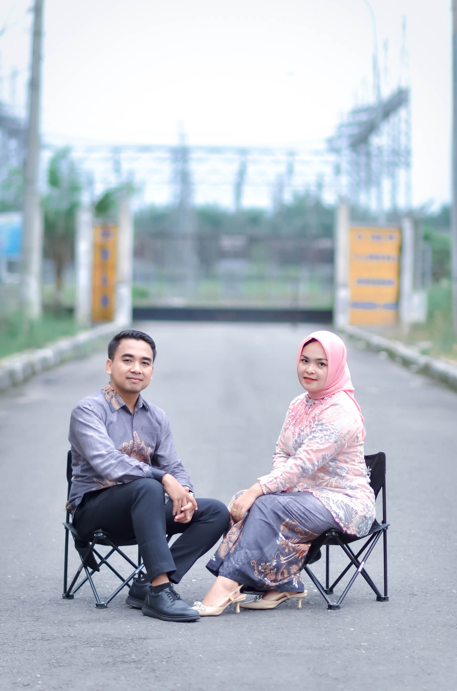
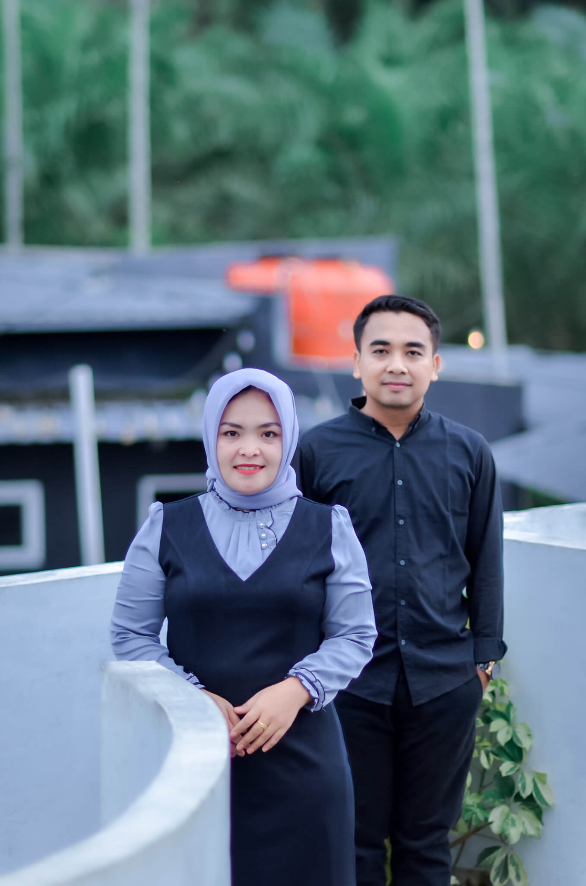
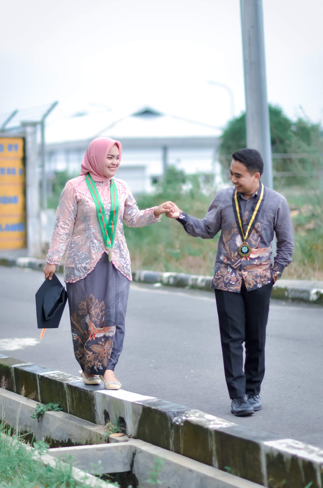

“Dan Diantara Tanda-tanda (Kebesaran)-Nya Ialah Dia Menciptakan Pasangan-Pasangan Untukmu
Dari Jenismu Sendiri, Agar Kamu Cenderung Dan Merasa Tentram Kepadanya, Dan Dia Menjadikan
Diantaramu Rasa Kasih Dan Sayang. Sungguh, Pada Yang Demikian Itu Benar-benar Terdapat
Tanda-tanda (Kebesaran Allah) Bagi Kaum Yang Berfikir.” (Q.S : Ar-Rum (30) : 21)
Maha Suci Allah yang telah menciptakan mahluk-Nya berpasang-pasangan, Ya Allah
perkenankanlah kami merangkaikan kasih sayang yang Kau ciptakan diantara kami.
Aisyah Nasution, S.Pd
Anak keempat dari: Bapak Alm. Irpan Nasution &
Ibu Bintang Jahro Hsb
&
Wildan Ahmadi Pohan, S.Kom
Anak kedua dari: Bapak Parmohonan Pohan &
Ibu Derhana Pulungan
Insya Allah Acara Akan
Dilaksanakan Pada:
Akad Nikah
Jum'at, 13 September 2024
Pukul: 16.00 WIB - Selesai
Resepsi
Sabtu, 14 September 2024
Pukul: 09.00 WIB - Selesai
Di Kediaman Mempelai Wanita Paringgonan, Kec. Ulu Barumun.
Our Gallery



Wedding Gift
Doa Restu Bapak/Ibu/Saudara/i Merupakan Karunia Yang Sangat Berarti Bagi Kami. Dan Jika
Memberi Adalah Ungkapan Tanda Kasih Anda, Bapak/Ibu/Saudara/i Dapat Memberi Kado Secara
Cashless.
Transfer ke Rekening BRI a.n
Wildan Ahmadi Pohan 3831 2883 xxxx xxxx
Anda Juga Bisa Mengirim Kado Fisik Ke Alamat:
Desa Paringgonan, Kec. Ulu Barumun, Kab. Padang Lawas, Sumatera Utara
Tiada Yang Dapat Kami Ungkapkan Selain Rasa Terimakasih Dari Hati Yang Tulus Apabila
Bapak/Ibu/Saudara/i Berkenan Hadir Untuk Memberikan Do'a Restu Kepada Kami.